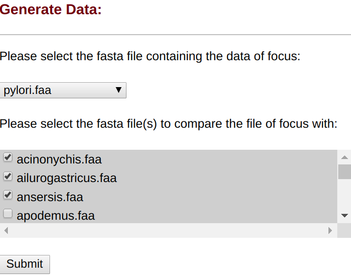
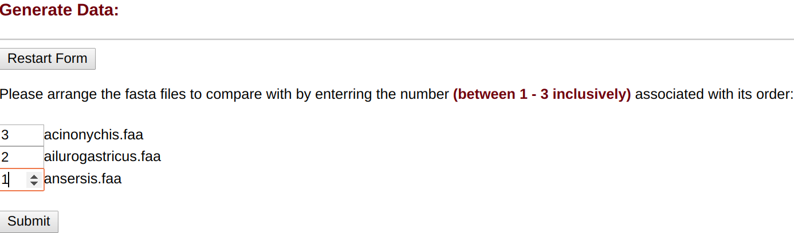
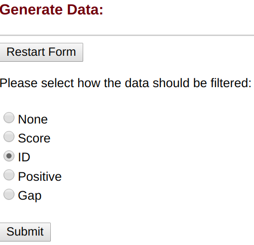
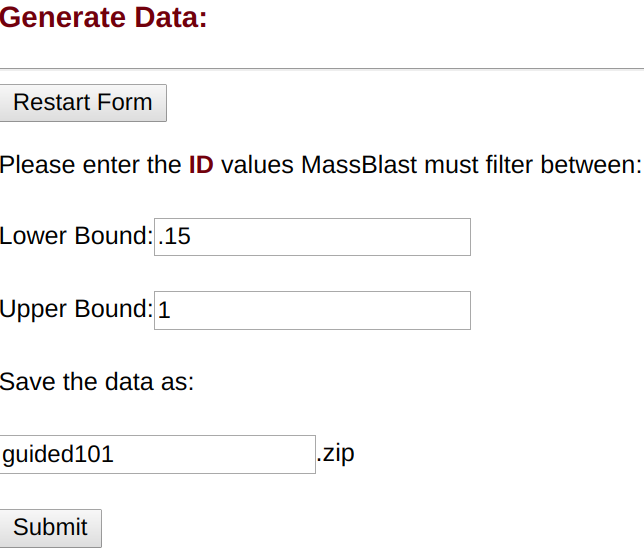
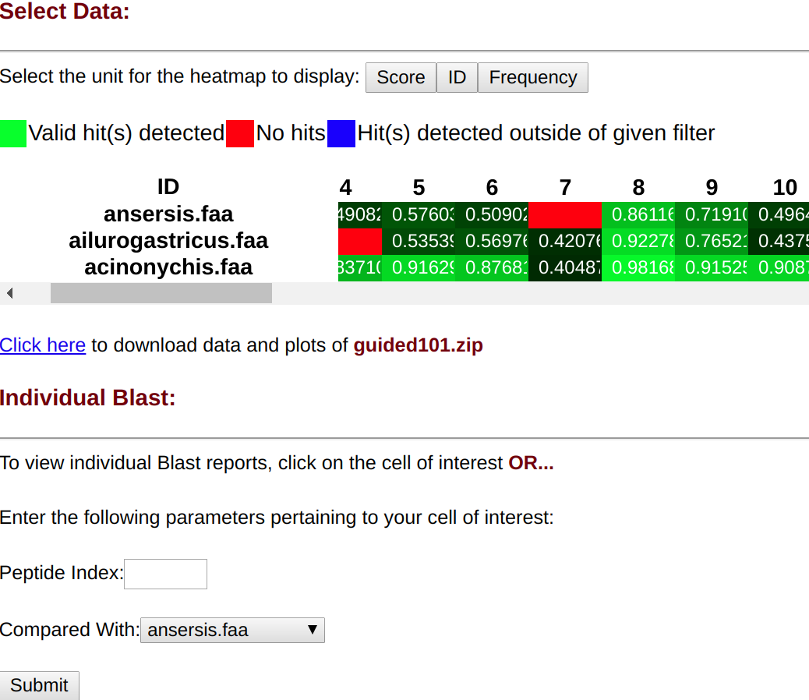

MassBlast

Work of Dr. Homayoun Valafar, Dr. Traci L. Testerman, JJ Satti
What is MassBlast?
While BLAST+ provides many services to identify the hundreds homologies among different peptide sequences, it isn't designed to find specific homologies, or data points, that pertain to a specific goal or interest.
BLAST+ reports are often long and can be very detailed; perusing through the mulitude of units to quantify the 1000's of homologies is not particulary effecient. The purpose of
MassBlast is to provide the same BLAST+ services, but with an emphasis on data being more concise and providing the necessary tools to visualize the data.
Data visualization takes the form of several heatmaps to highlight certain units used to measure/quantify each homology. Those units being...
- Score: In the context of sequence alignments, a score is a numerical value that describes the overall quality of an alignment. Higher numbers correspond to higher similarity. This is biased on the length of the Peptide. Longer Peptides have a higher score.
- ID: The extent to which two (nucleotide or amino acid) sequences have the same residues at the same positions in an alignment, often expressed as a percentage. MassBlast expresses this value with decimals between 0 through 1 (inclusive).
- Positive: The number and fraction of residues for which the alignment scores have positive values. MassBlast expresses this value with decimals between 0 through 1 (inclusive).
- Gap: The number that represents the penalty due to mismatches in compared peptide sequences in each homology. For this unit, a stronger homology is one that contains a lower Gap value. MassBlast expresses this value with decimals between 0 through 1 (inclusive).
MassBlast also provides another unit called "Frequency", which represents the number of homologies found for that particular BLAST+ query.
MassBlast Tutorial:
After creating an accoun but prior to doing any calculations, users must upload Proteome FASTA files in the upload tab.
If you do not have any, feel free to use the following FASTA files in this
zip file.
The guide/tutorial below will use the following 4 FASTA files from the given zip file above...
- acinonychis.faa
- ailurogastricus.faa
- ansersis.faa
- pylori.faa
Ensure that these files have been uploaded to follow along with the guide/tutorial.
Steps 1 - 4 take place in the
Analyze tab.
Follow the directions below to understand how to submit a MassBlast query.
Step 1: Selecting the files of interest
This is the first step in doing a calculation with the FASTA files on MassBlast.
In the select box, the user must select the FASTA file that is to be the focus, or the file that all FASTA files will be compared with for homogenous structures.
' .
In the gray box with many checkboxes, here the user must select all FASTA files that he or she may want to compare with the FASTA file selected in the select box above.
' .
For the tutorial, the user is interested in using
pylori.faa as the focus file, and comparing it with
acinonychis.faa, ailurogastricus.faa, and ansersis.faa as shown below.
' .
';
Step 2: Arranging the selected files
' .
This is the second step in doing a calculation with the FASTA files on MassBlast.
' .
The user must enter the number between 1 through n (n is the number of files to compare with) in the textbox associating with what order each file should be used to compare with the focus file.
' .
The numbers can be entered in any order and will arrange the file from least to greatest.
' .
For the tutorial, the user wants to analyze the files he select in this specific order:
ansersis.faa, ailurgastricus.faa, and acinonychis.faa as shown below.

Step 3: Select the range of peptide sequences to analyze
The user must enter the 2 numbers that indicate what peptide sequences to include in the MassBlast query.
For the tutorial, the user wants to analyze peptide sequences
1 through 200 inclusively.

Step 4: Applying filters and submitting the query
The user now has the option to apply for a filter. If they select
None, this step can be skipped, otherwise continue forward.
If the user selects any other of the 4 options:
Score, ID, Gap, or Positives, then they must provide the parameters of the filter as shown below.
Additionally, the user will be prompted to enter a name to save the results under.
For the tutorial, the user wants to filter by ID, and decides the filter to only include results that have an ID between
.15 and 1, and have the MassBlast query save as
guided101.

Step 5: Accessing the data
This is the last step and it takes place in
View Results tab.
The user is initially prompted in selecting the zip with the name enterred in the previous step.
If you are following along with the tutorial, select
guided101.zip.
From there, you are provided this menu:

Selecting any of the 3 buttons:
Score, ID, or Frequency allows for the user to switch the heatmap between the Score, ID, or Frequency heatmap.
(The
Frequency graph relates to the number of homologies that particular peptide had when compared to other FASTA files, regardless of the filter given)
Additionally, the user can hover over cells to get a tooltip that holds more information regarding the particular peptide.
If a cell is clicked on, at the bottom of the page appears the BLAST report for that particular cell along with the text of the tooltip that can be copied to the clipboard.
The bottom most menu serves the same as clicking on a cell. Enter the index of the peptide and the specie being compared to access the Blast report for a particular cell.
Step 6: Downloading your data
The menu to analyze your data also contains a download link for the saved data as a zip.
The files in that zip include:
- allMB.txt: a file that contains all the BLAST reports, but in one text file
- allPeptides.txt: a text file with a list of each region of homology detected by BLAST for each of the focus file\'s peptide sequences
- score.csv: a CSV file containing the Score of every cell from the heatmap
- id.csv: a CSV file containing the ID of every cell from the heatmap
- gap.csv: a CSV containing the Gap of every cell from the heatmap
- positives.csv: a CSV file containing the Positive of every cell from the heatmap
- hm-score.png: a PNG that is a smaller representation of the Score heatmap
- hm-score.html: a html file that is a copy of the Score heatmap displayed
- hm-id.png: a PNG that is a smaller representation of the ID heatmap
- hm-id.html: a html file that is a copy of the ID heatmap
- hm-frequency.html: a html file that is a copy of the Frequency heatmap displayed
- request.txt: a file that holds the parameters the user submitted for this MassBlast query